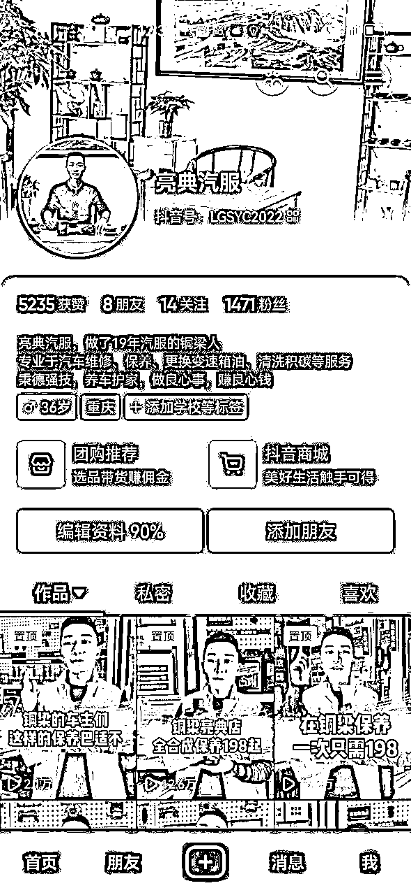
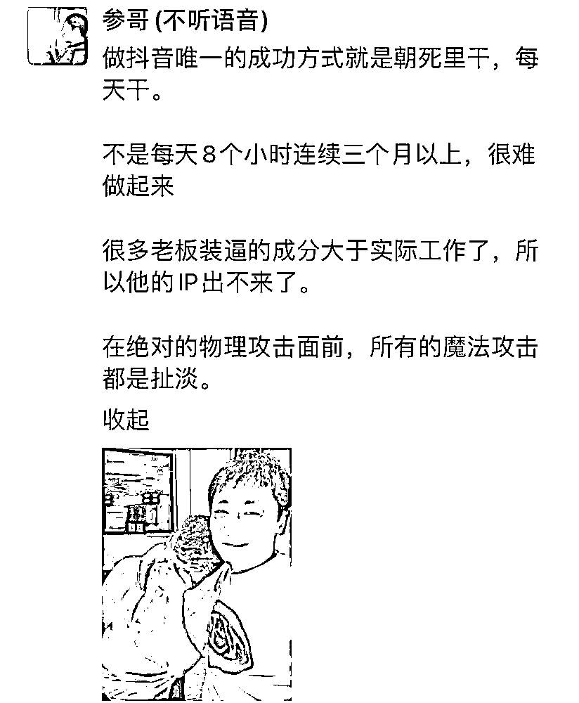
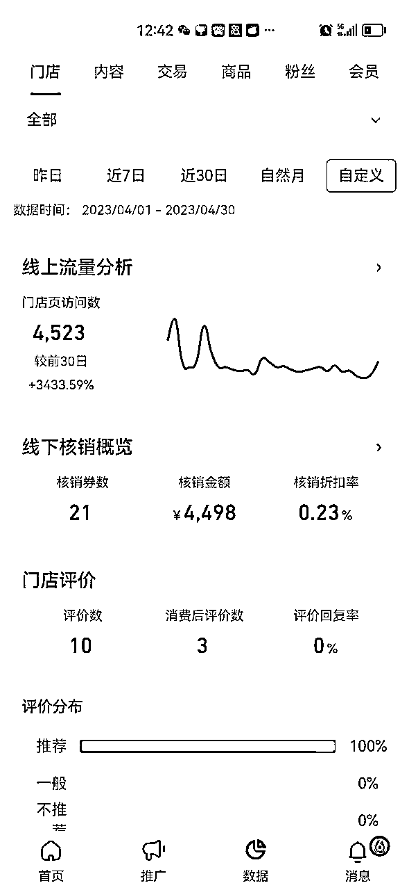
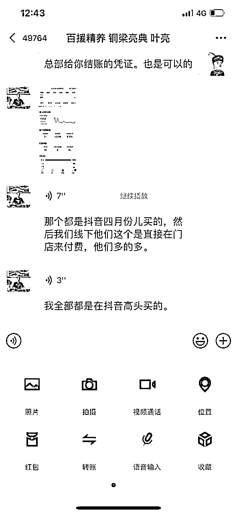

来源：https://q6rpgbg9y1.feishu.cn/docx/OpRWd1uOAoaUygxUW3OcgIZHnAf
案例主人公是我合伙人的亲弟弟亮仔，他做汽修服务19年了，一直是开汽车后服务实体店。之前实体店获客全靠门店自然人流和老客户转介绍。
因为一直扎根在这个行业，所以积累的客户资源很多，再加上以前实体好做的时候，每天门店的自然流量就已经让他很滋润了。所以一直没有想着从其他地方搞流量。
从疫情开始，他就发现门店的自然流量不行了，再这样下去，等老客户资源枯竭了，没有新流量进来，肯定是不行的，于是开始尝试在线上做流量。

受我合伙人影响，亮仔从2022年就开始拍抖音引流。因为从来没有做过抖音，只知道抖音有流量，他又是比较务实的人，说干就干，而不是一直停留在学习阶段。
因为自己经常刷抖音，看的都是比较搞笑的视频，他发现别人拍那种视频点赞都很多，动不动就几十万，所以他就想我也学他们拍这样的视频。
对于从来没拍摄过视频的亮仔来说，做一个视频完全没那么容易的。学剪映都花了好几天时间，然后弄文案、音乐、剪辑之类的东西，非常耗能，每天还要接待客户，好不容易搞出一个视频却没有任何效果。因为投入的时间精力很多，所以对结果都期望就越大。结果却完全不尽人意，因为做抖音拍摄需要家里人协助，还被家里人Diss浪费时间。
结局大家都猜到了，他折腾了一年，一个客户也没从抖音获取到。
事后他总结说：2022年，他拍短视频，学习成本，时间成本都太高，并且他的理解还停留在流量逻辑而不是变现逻辑里，短视频里从来没有呈现过变现产品，加上自己根本没办法坚持去做，后来就慢慢放弃了，一个订单都没有是正常的。
他通过一年的试错才明白了一个互联网老手早就明白的道理：拍视频的目的是变现，变现的前提是先有变现产品。
明确了拍视频就是要变现后，他开始了新的尝试。
2023年3月份开始，亮典汽服背后的供应链服务商——百援精养，派了一个运营老师到店。首先是明确了，拍抖音就是卖一款定价为199元的汽车机油保养套餐。
这个套餐里，附赠了汽车的全面诊断服务。如果诊断再检测出问题，车主自然愿意付费做更多保养和维修。
他开始以卖为核心，思维转变之后，视频内容就围绕着产品来呈现。
因为百援精养是全国连锁店，所以他们总部直接拿了抖音本地生活服务商。于是亮典汽服就可以直接上架抖音团购并开始大量卖，卖完到店核销，百援精养统一结算给亮典汽服。
有了总部的加持，他就有了更多信心，不用考虑其他复杂繁琐的细节，自己就只管拍视频引流，卖套餐。至于到店再转化，那就是他的强项了。
知道了该拍什么内容，可是，视频怎么拍，到底什么才是适合自己的拍摄形式？
一开始亮仔都是拍口播短视频，一镜到底，亮仔也不喜欢用提词器，所以每次都只能靠背稿。
背稿嘛，特别痛苦，且很难持续，每天要花很多时间，这个办法很多人坚持不了多久就放弃了。
考虑到大部分汽车行业的从业者，都是学历比较低，对互联网的认知不高，总部开始尝试找寻一个门槛低、上手易、耗时短、人人可复制的拍摄方案。
这个方案的精华就在于——IP只需要出现在短视频头5秒和结尾5秒，其余时段素材用剪辑配套图片或视频。
不要小看这个小小的改动。可能对于我们习惯拍视频的人而言不算什么，甚至都看不出什么特别的地方。但是对于全国拥有几百家线下店的百元精养来说，这个方法完美解决了人人可复制的问题。
有了这个操作，亮仔只需要背前5秒和后5秒的内容，其余时段他只需要声音出现在视频里即可，这样正文内容他就不需要背诵了，可以完全照着稿子读。
单纯的发纯产品广告，没有温度和信任，单纯的口播，上手太难太专业。而这样拍摄的视频，又有人设的信任感，又能呈现出产品，拍摄起来又简单。
前两天才看到一张截图，海参说做抖音就是要往死里干。
其实这个道理，很多人都知道，在座的难道不明白吗？我想大家都明白。
可是为何知行合一就是那么难？
就是因为——行动阻力太大了。

我现在都还记得，我拍第一个视频，花了整整9个小时。什么概念，一天啥也不用干了，尽管我知道要往死里干，但是根本没办法持续啊，太他妈反人性了。
对于亮仔这样的初中毕业，学习能力弱，对互联网没有任何感知的人。他们不需要你上来给他们一大堆底层逻辑，认知方法论，定位，权重，流量，投流。通通都不需要。
他们需要的——是马上能上手，且能持续去做的实操方案。
他们需要快速的看到结果。
这个，我认为才是这套方案最牛逼的地方。
你说人家那么大个连锁，花钱做点牛逼的视频不行吗？好好打造个IP不行吗？当然行，很简单对吧，但是啊，高大上的东西除了好看，在小部分群体里有效果外，对于大部分人来说，毫无意义。
人人可复制，才是根本。
用这个方法，上手就非常容易了，总部每天给你找文案，你自己拍照着念，再拍自己前五秒出镜的内容，最后用自己的”朋友圈视频“混剪好就行，十分钟搞定。就这样，一个月时间，拍了差不多30个视频，2023年4月份，亮仔就通过抖音卖出去了21份199的套餐。

以上只是4月份线上下单的。线下还有79单是同城的车主看到短视频后到店来体验了199这个套餐。你可能会追问，你怎么知道这些人啊从抖音来的。那是因为每个到店的客户，亮仔都会问他们是哪个渠道过来的。
不要小看这个销量——1个月100单，做汽车相关行业的都知道，这个产品就是纯引流，赚点手工钱，真正赚钱的是到店后升单。
因为汽修这样的行业，需求是滞后的。
也就是，客户只是想来做个A，一来了通过你专业的检查，才发现原来B有问题，这个问题存在很久了，但是他自己是看不到的。
那么这个需求被你发掘出来，多半情况下他是要处理的，特别是涉及到跟安全相关的问题，就更不敢马虎了。
从这个点其实可以看到一个问题，我们现在都知道，要从变现的思路去做流量。然而很多时候，其实我们会被自己框在仅有的变现思路里。
你想这类产品，其实根本不用怎么考虑变现。你只需要把客户搞进店，他们有无数种后端变现方法。那么你的锚点就要改变，随之视频的内容呈现也要改变，你只需要获得更多的精准流量就可以，只要到店，哪怕到店前一毛钱不赚都无所谓。
亮仔的客户里，很多是看到了视频就直接来店里的，都不在抖音上下单。
其中大部分客户到店后，都做了其他保养和维修项目。2023年4月份，仅仅是线上来的客户一个月就产生了10万流水。且这些客户沉淀到他的私域里，后期肯定还会有很多变现机会。

有了正反馈，行动成本又极低，现在亮仔拍短视频极其轻松，每天都迫不及待地想拍。他们还在策划新的引流爆品。
人都是习惯于用自己的视野去看世界，我们在给实体客户赋能的时候，总是按照我们认为的，我们理解的逻辑去做方案，然后让他们去执行。
如果没有好的结果，那我们通常不会认为是自己的问题，就觉得是客户执行力不到位，让他做的很多事情都没有做或者没有做对。还习惯反问客户，为什么同样的方案别人可以而你不行？是不是你的问题?
子不教，父之过。教不严，师之惰。
我们教实体店搞流量，其实就是老师的角色。有谁曾想完全站在客户的角度去策划方案。
不止要考虑专业内容和产品，还要着重关注这个人，这个【执行人】。
完全理解用户的认知、学习能力、执行力等因素，做一个他能轻易上手的方案。
其实我们也明白，做抖音，持续做才是道。其他都是奇技淫巧。
我们一直说实体做抖音就是发传单逻辑，就是持续的去曝光你的人、产品和服务。可是我们的注意力一直在传单上——也就是如何设计一个好的传单——如何设计一个好的视频内容。
我们完全忽略了【发】这个动作，是需要时间精力和成本的。
你现在请一个大妈发传单也要一天80块了，成本挺高的。
在抖音，这“80”是什么，是写文案，是剪视频，是背稿，是一切传单成型前的具体动作。
这个动作越多，意味着你【发出去】一张传单的成本就越高，难度就越大。
你想想，如果在线下，有一万个免费大妈给你发传单，而你只需要出传单成本，你的生意肯定也会火爆。
其实抖音也一样，这个”大妈“的成本，是你自己决定的。
分享这个案例出来，是因为这个案例也给了我很大的启发。
其实仔细观察你会发现，这个视频的形式就是我们玩的最多最烂的【美食探店形式】。
区别在于行业不同，出镜人不同而已。
美食探店博主，卷成血海，其实也是可以换到这个行业去做的。
那么简单的视频为何我们想不到？其实就是因为我们被框在了自己的思维里。
我们认为这也太简单了，早就没用了。
放下我们自以为的专业，尝试理解客户，从他的角度去思考，去策划。
如何才能让客户最低成本最小行动阻力的持续去做，是我们每个做服务的人都要思考的事。
客户能上手的更容易了，自然就能持续了，成功概率就随之变高了，我们当然也就更成功了。
祝：阅有所获。